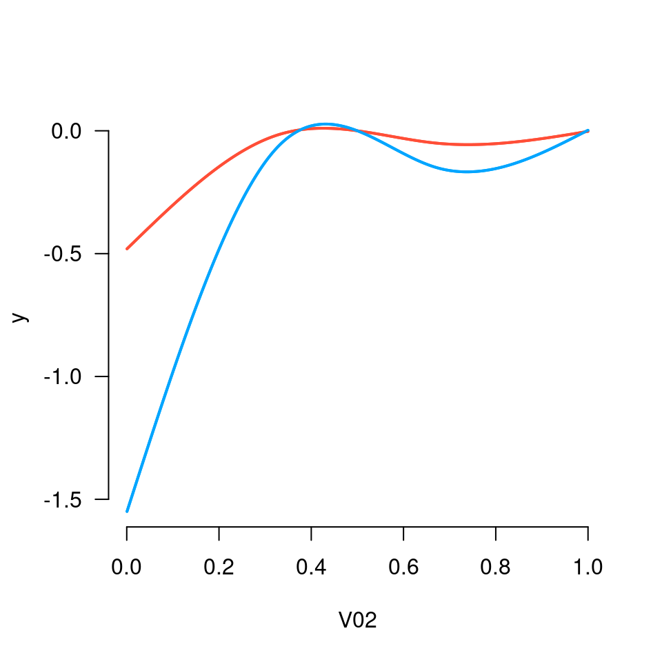
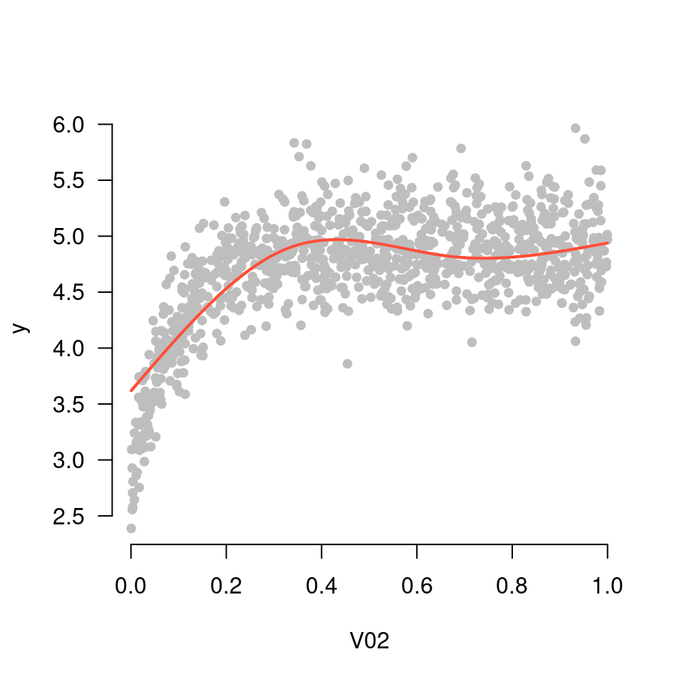
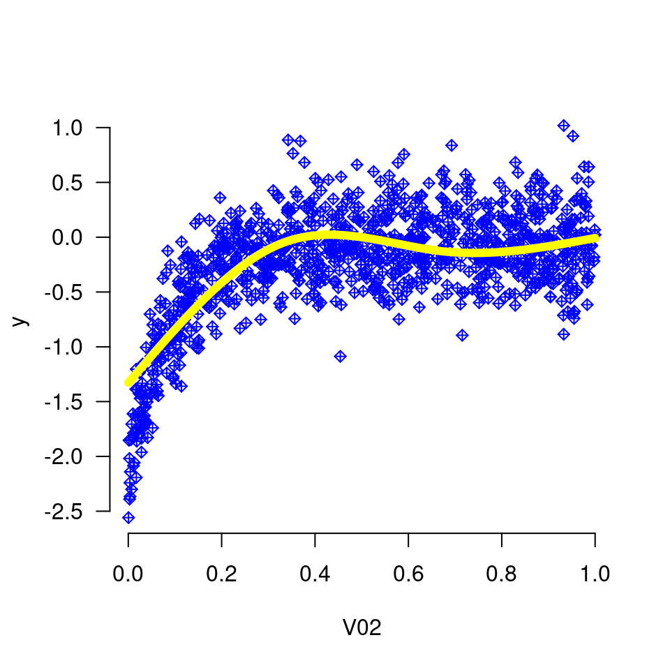
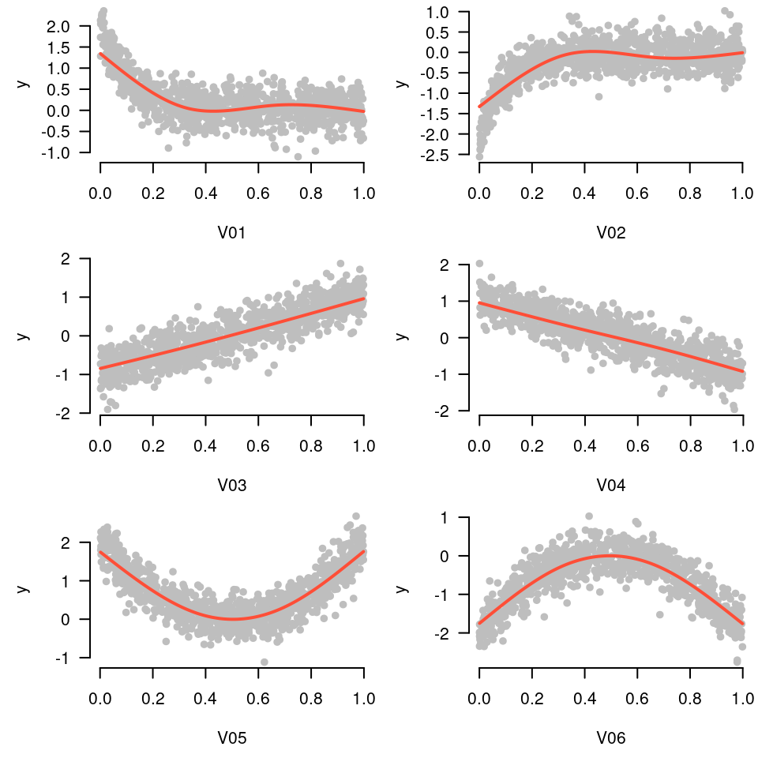
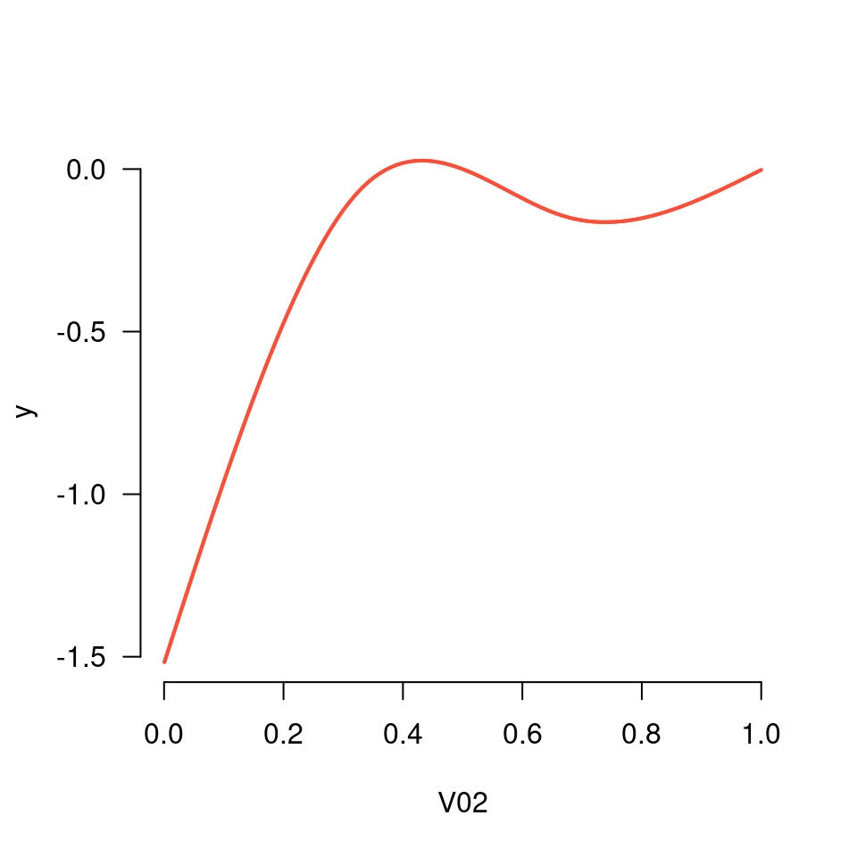
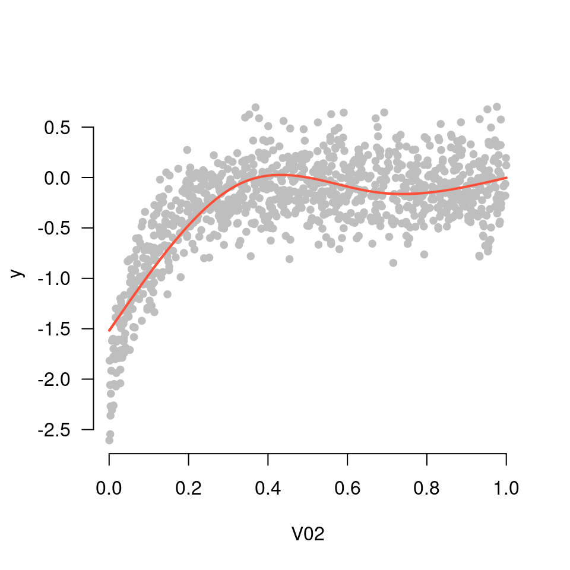

Plots a spline curve for a single variable using a grpreg or cv.grpreg object for which an additive model was fit.
plot_spline( fit, variable, lambda, which = NULL, partial = FALSE, type = "contrast", warnings = TRUE, points.par = NULL, ... )
Arguments
| fit | A |
|---|---|
| variable | The name of the variable which will be plotted (character). |
| lambda | Values of the regularization parameter |
| which | Index of penalty parameter |
| partial | If |
| type | Type of plot to be produced (default =
|
| warnings | If |
| points.par | List of parameters (see |
| ... | Further arguments to be passed to |
Details
plot_spline() takes a model fit using both the grpreg() and expand_spline() functions and plots a spline curve for a given variable.
Examples
Data <- gen_nonlinear_data(n=1000) X <- expand_spline(Data$X) fit <- grpreg(X, Data$y) plot_spline(fit, "V02", lambda = 0.03)plot_spline(fit, "V02", lambda = 0.03, partial=TRUE)plot_spline(fit, "V02", lambda = 0.03, partial=TRUE, type='conditional')plot_spline(fit, "V02", lambda = 0.03, partial=TRUE, lwd=6, col='yellow', points.par=list(pch=9, col='blue'))op <- par(mfrow=c(3,2), mar=c(4.5, 4.5, 0.25, 0.25)) for (i in 1:6) plot_spline(fit, sprintf("V%02d", i), lambda = 0.03, partial=TRUE)plot_spline(cvfit, "V02", partial=TRUE)